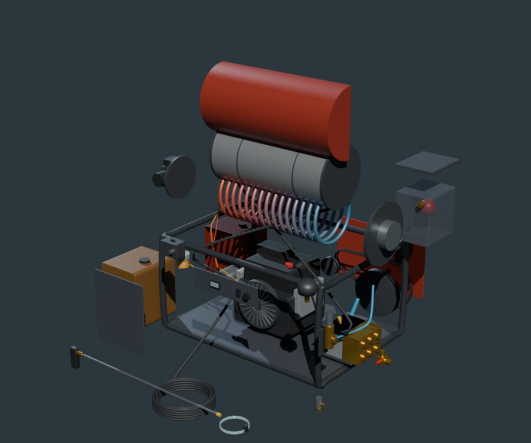

Washer Bench
Animated 3D exploded views, troubleshooting, parts and maintenance for our hot-water pressure washers. Pick a machine.
Animated 3D exploded views, troubleshooting, parts and maintenance for our hot-water pressure washers. Pick a machine.